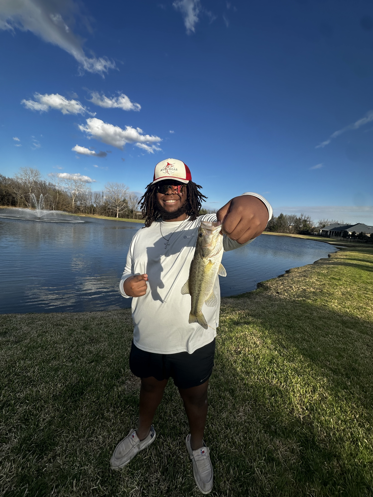
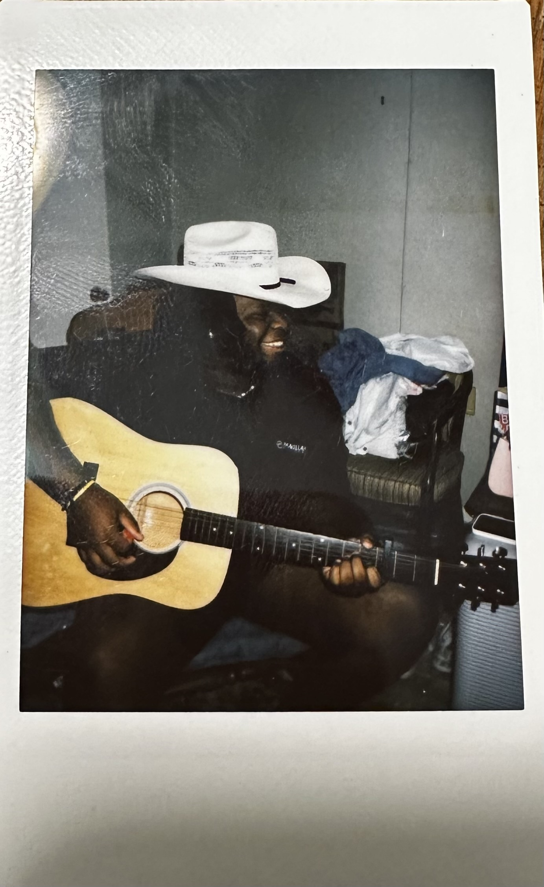
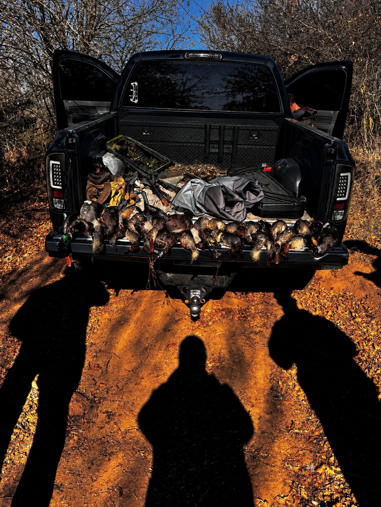

About me
I am majoring in Computer Applications and Legal Studies, and one of my biggest goals is to graduate and build a career in cybersecurity. I am interested in learning more about this because ever since I was a little kid, I've always been fascinated by computers. Not only that, but I want to develop the skills needed to work in this field. Plus, who wouldn't want to learn about one of the main things our world revolves around?
At a glance
- Major
- Computer Applications and Legal Studies
- Graduating
- Spring semester
- Field
- Cybersecurity
After graduating, I hope to get a cybersecurity job or join the Air Force and gain several years of experience working in cybersecurity there. My long-term goal is to grow in the field and eventually work in cybersecurity for the FBI. I also feel like the military would give me a pathway to make the FBI dream more achievable. I also want to use this field to be a good provider for my future family.
My hobbies

Fishing
Fishing is how I slow down and clear my head. I like the patience it takes and the time outdoors, and there's nothing better than getting a bite and fighting the fish.

Playing guitar
Playing guitar lets me be creative and take a break from screens. I enjoy learning new songs and slowly getting better, and it's something I can pick up any time to unwind, but it is something that has made me a better person and strengthening my walk with the lord.

Hunting
Hunting gets me outside and teaches me discipline and patience. Most of it is preparing and waiting, and it's a good excuse to spend time outside and have fun with the people that goes with me.